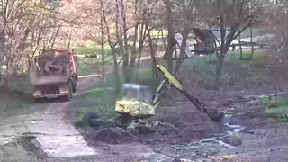
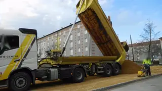

Тот же?
14:38 · К2Из-за отвала выехал самосвал.
Это Е 482 КМ159?
14:30 · К22
 сейчас · К22
сейчас · К22Его не было видно 8 минут, поэтому система спрашивает вас.
Отвечено ✓ «Та же», прораб в 14:40
сейчас14:40
Нужен ваш ответ3
Людей 14лица скрыты6 на К1, 8 на К2
Цвет полоски у строки показывает, чья техника:свояарендаподрядчик
Пока нет ответа, время идёт в спорный интервал.
Из-за отвала выехал самосвал.
Это Е 482 КМ159?
сейчас · К22Его не было видно 8 минут, поэтому система спрашивает вас.
Отвечено ✓ «Та же», прораб в 14:40
борт12Мини-экскаватор, аренда
Отвечено ✓ «Погода», прораб в 14:40
 вырезка, кадр 14:36 · К16
вырезка, кадр 14:36 · К16У 352 К?159сомнительно · 2 из 5 кадров
Самосвал? Нет в списке площадки. Номер на кадре размыт для показа.
Отвечено ✓ «Верно», прораб в 14:40
Из-за отвала выехал самосвал
ждёт ответа
К2. Тот же, что Е 482 КМ? Время в спорном интервале

14:38 · К22Въехал
У 352 К?159сомнительно, 2 из 5
Самосвал? Нет в списке площадки
14:36 · К16
Въехал
О 218 ВК159
Самосвал, рейс 5 за смену, номер 5 из 5 кадров
 14:31 · К11
14:31 · К11
Скрылся за отвалом
Е 482 КМ159
К2, последний кадр 14:30
Стоит
борт12
Мини-экскаватор, аренда. Причина не указана
Стоит с 14:22
С 446 НЕ159
Бетоносмеситель, ждёт разгрузки
 14:22 · К14
14:22 · К14
Уехал
Х 731 АМ159
Самосвал, на площадке 1 ч 12 мин, рейс 4

14:05 · К17Ложная тревога отклонена
«Человек в зоне стрелы», К2. На кадре в зоне стрелы людей нет. Отклонил прораб, 13:21
 13:20 · К23
13:20 · К23
Уехал
Т 905 ОР159
Самосвал, рейс 2
 13:10 · К17
13:10 · К17
Уехал
Р 117 СА159
Бетоносмеситель
Человек в зоне стрелы экскаватора
К2. Подтверждён прорабом в 11:54
38,5машино-ч
в движении 31,2стоит 6,1не видно 1,2, спорный интервал
 14:40 · К11
14:40 · К22
14:40 · К11
14:40 · К22
Считаем по двум камерам: въезд и котлован
6ч 05мин
у 7 машин; оценка по ставкам оператора, не к оплате≈ 17 500 ₽
Дольше всех стоит мини-экскаватор «12»: 2 ч 10 мин
кадров с людьми в выгрузке нет
борт03колёсный экскаватор
6ч 40мин
без простоя, не видно 12 мин
Сверено: прораб, 14:40
борт07экскаватор
6ч 28мин
стоит 52 мин, не видно 6 мин
Сверено: прораб, 14:40
борт12мини-экскаватор
6ч 06мин
стоит 2 ч 10 мин, не видно 6 мин
не сверено
О 218 ВК159самосвал
3ч 54мин
стоит 34 мин, рейсов 5, не видно 14 мин
Сверено: прораб, 14:40
Е 482 КМ159самосвал
4ч 06мин
стоит 41 мин, рейсов 3, не видно 20 мин
не сверено, ждёт ответа «Тот же?»
С 446 НЕ159бетоносмеситель
1ч 42мин
въехал 12:58, стоял 13:05–13:52 и стоит с 14:22, всего 1 ч 05 мин
не сверено
У 352 К?159самосвал?
4мин
в часы не идёт, пока номер не подтверждён
не сверено, номер под вопросом
Х 731 АМ159уехал 14:05
1ч 12мин
стоит 18 мин, рейсов 4
Сверено: прораб, 14:10
Т 905 ОР159уехал 13:10
4ч 48мин
стоит 25 мин, рейсов 2, не видно 8 мин
Сверено: прораб, 13:15
Р 117 СА159уехал 12:40
3ч 30мин
без простоя, не видно 6 мин
Сверено: прораб, 12:45
Точность на открытых роликах примера: въезды 19 из 20 (76–99 %), номер верно 47 из 50 (84–98 %), неверно 0, не прочитано 3. Отметка «Сверено» часы не меняет.
с 14:28, прошло 12 мин 07 с
в движениистоитне видно
не сверено
Всё, что система не может решить сама, придёт сюда вместе с кадром. Сейчас решать нечего.
Людей в кадре 6, лица и кабины размыты, имён нет.
Левый край К2 закрыт отвалом, техника там не видна. Е 482 КМ не видно с 14:30.
Белой рамкой обведены машины из списка смены, штриховкой закрыто то, чего камера не видит.
Все кадры взяты из открытых роликов Wikimedia Commons. Лица, кабины и номера размыты заранее. Цифра в кружке на кадре указывает строку этого списка.
Одна настройка ставит знак и цвет заказчика в шапку и на главные кнопки.
Смена вт 20.10, 08:00–14:40 (идёт). Черновик для сверки.
Кадров с людьми в выгрузке нет. Простой в рублях дан оценкой, не к оплате.